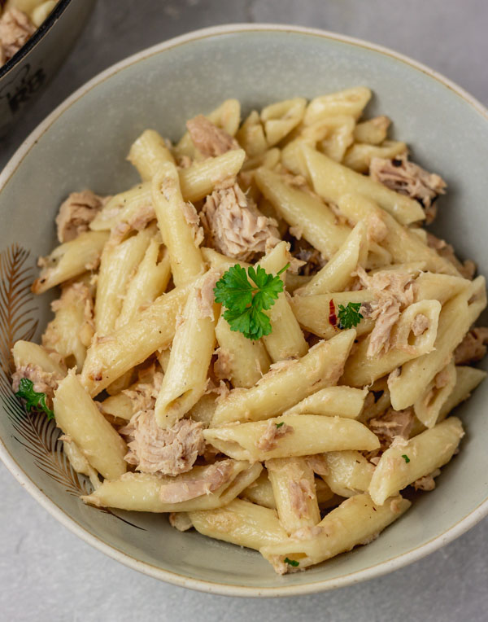

Canned Tuna Pasta

For all of the pasta lovers, this tuna pasta recipe is so simple yet so delicious that you will probably be doing it again.
Ingredients:
- A can of tuna.
- Any kind of noodles used for pasta.
- An onion.
- Olive oil.
- Garlic cloves.
- Lemon juice.
- Salt and pepper.
Steps:
- Boil the pasta with a bit of salt according to instructions.
- While the pasta is boiling, chop the onion and the garlic cloves into brunoise size and reserve.
- When the pasta is cooked, reserve some pasta water and drain the rest of it.
- In a pan add the oil and when it gets hot, then add the onion and sauté the desired time and add the chopped garlic and sauté again for a few seconds more.
- Add the pasta water into the pan and stir.
- When the sauce comes to a boil add the tuna and the lemon juice to taste and stir carefully.
- Add the pasta and stir carefully as to not break apart the noodles.
- Lastly, turn off the heat and serve.